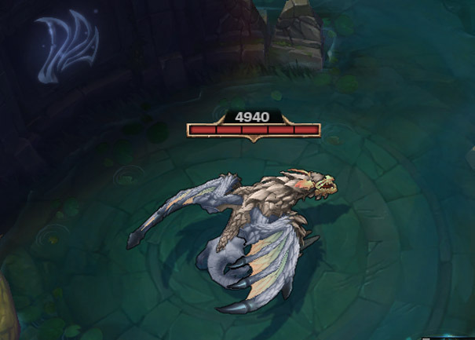

PENTA KILL
2019/06/16
【しゃるるから学ぶ】JG基礎知識
今回はしゃるるさんのJG基礎講座の動画を見て得た知識を書いていきたいと思います。
中立のわき時間
| 中立 | 初回出現時間 | わき時間間隔 |
|---|---|---|
| 赤バフ | 1分30秒 | 5分 |
| 青バフ | 1分30秒 | 5分 |
| ラプター＆オオカミ | 1分30秒 | 2分30秒 |
| グロンプ＆クルーグ | 1分42秒 | 2分30秒 |
| リフトスカトル | 3分15秒 | 2分30秒 |
| ドラゴン | 5分 | 5分 |
| エルダードラゴン | 5分 | 5分 |
| ヘラルド | 9分50秒 | なし |
| バロン | 20分 | 6分 |
↓ちなみにMAPに映る砂時計はわき時間を表している
敵の中立も一度視界をとれば砂時計が表示される
ドラゴンの効果
インファーナルドレイク（火）
ADとAPが10/17/24%増加。
マウンテンドレイク（土）
エピックモンスターとタワーに対してDMを与えた際に、16/23/30%の追加TrueDMを与える。
クラウドドレイク(風)
移動速度が3/4.5/6%増加。非戦闘時は9/13.5/18%増加。e
オーシャンドレイク(水)
8秒間チャンピオン又はタワーからDMを受けていない場合、5秒毎に減少HP/Manaの6/9/12%を回復。
ヘラルド
タワープレートをとる目的で使う！(約2枚分,320ゴールド)
ヘラルド出現時間は9:50
タワープレート消滅は14:00
9:50～13:00にとると良い
プロフィール

My name is dirtynight.
主にLoLやoverwatchをプレイします
lolについての記事を書きます
最新記事
タイマン最強ジャックス！